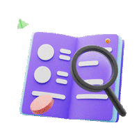

지식in 20th 함께해 주셔서 고맙습니다
늘 빛나는 호기심과 답변을 나눠주신
여러분 덕분에 지식iN이 스무 살이 되었습니다.
감사한 마음을 담아 준비한 생일 이벤트와
20년의 내공이 담긴 스토리를 함께 즐겨주세요!
질문하는 당신, 답변하는 당신, 모두가 지식인이십니다
우리는 왜 질문할까요?
은 이니까
하나부터 열까지, 마음껏 물어보세요!
3억 개의 질문, 5억 개의 답변, 우리가 쌓아온 호기심의 기록들
-
눈 깜짝 하는 사이 올라와요
2.1초마다 새로운 질문
1.2초마다 새로운 답변 -
Z세대는 궁금한 건 못 참지
신규 사용자의 56%가 1020
-
대한민국 호기심 폭발 시간!
새학기 시작 전 1월과 8월,
그리고 매주 월요일 오후 7시 -
얼마나 다양한 질문을 하냐면
6,589가지 카테고리가 있다는 말씀!
-
한국장학재단, 고용노동부, 교육부 등
483개 기관, 기업, 단체가
지식파트너로 활동하고 있어요 -
전문가 답변이
700만개
의사, 변호사, 세무사...
전문가분들께 THANK YOU! -
지식iN에서 질문 ・ 답변 해본 사람?
지금까지 무려 3,200만명
-
눈 깜짝 하는 사이 올라와요
2.1초마다 새로운 질문
1.2초마다 새로운 답변 -
Z세대는 궁금한 건 못 참지
신규 사용자의 56%가 1020
-
대한민국 호기심 폭발 시간!
새학기 시작 전 1월과 8월,
그리고 매주 월요일 오후 7시 -
얼마나 다양한 질문을 하냐면
6,589가지 카테고리가 있다는 말씀!
-
한국장학재단, 고용노동부, 교육부 등
483개 기관, 기업, 단체가
지식파트너로 활동하고 있어요 -
전문가 답변이
700만개
의사, 변호사, 세무사...
전문가분들께 THANK YOU! -
지식iN에서 질문 ・ 답변 해본 사람?
지금까지 무려 3,200만명
-
반려동물 누적 질문
420만
고양이, 구피, 기니피그, 장수풍뎅이까지
이 세상 집사들 다 모였어요 -
MBTI에 가장 진심인 유형은?
INFP가 질문 17,745개로 1등!
-
제발 이 노래를 찾아주세요ㅠㅠ
지식iN에서 노래를 찾아 헤맨
28,056명의 사람들과 884,585개의 질문들 -
삼행시라면 지지 않습니다
삼행시 누적질문 12만 개
채택 답변자의 49%가 10대!
-
반려동물 누적 질문
420만
고양이, 구피, 기니피그, 장수풍뎅이까지
이 세상 집사들 다 모였어요 -
MBTI에 가장 진심인 유형은?
INFP가 질문 17,745개로 1등!
-
제발 이 노래를 찾아주세요ㅠㅠ
지식iN에서 노래를 찾아 헤맨
28,056명의 사람들과 884,585개의 질문들 -
삼행시라면 지지 않습니다
삼행시 누적질문 12만 개
채택 답변자의 49%가 10대!
-
올림포스를 넘보는 신 세계
매주 열심답변자로 선정된
51명의 레전드 -
최초부터 지금까지 290주 연속?!
신등급 16,176명
절대신 124명 -
이 땅의 최초의 절대신
'코비진스'와 '택배답변만14년차'
절대신 등급 신설과 동시에 등극! -
WOW, 넘버원으로 인정합니다!
질문을 110,201개 올려준 '마르첼로'님
답변을 478,162개 달아준 '택배답변14년차'님 -
안녕하세요 최장수입니다.
가장 오래 활동한 지식 연차 20년
20년 활동한 지식인 99명 -
기부왕 & 봉사왕을 소개합니다
2021년 해피빈 4,311,000원으로 가장 많이 기부한 '고양이인스타' 님
교육기부 답변 누적 383시간을 달성한 'MathRoiD' 님 -
지식iN 배지 수집왕 '별명안씀'님
총 86개의 배지를 수집했어요!
- 
-
콕 집어, '코비진스'님이 알려주세요!
1:1 질문을 무려 7만 번 받았어요
-
답변을 달았다하면 채택!
답변 채택율 100% 영예의 신등급
무려 872명!
-
올림포스를 넘보는 신 세계
매주 열심답변자로 선정된
51명의 레전드 -
최초부터 지금까지 290주 연속?!
신등급 16,176명
절대신 124명 -
이 땅의 최초의 절대신
'코비진스'와 '택배답변만14년차'
절대신 등급 신설과 동시에 등극! -
WOW, 넘버원으로 인정합니다!
질문을 110,201개 올려준 '마르첼로'님
답변을 478,162개 달아준 '택배답변14년차'님 -
안녕하세요 최장수입니다.
가장 오래 활동한 지식 연차 20년
20년 활동한 지식인 99명 -
기부왕 & 봉사왕을 소개합니다
2021년 해피빈 4,311,000원으로 가장 많이 기부한 '고양이인스타' 님
교육기부 답변 누적 383시간을 달성한 'MathRoiD' 님 -
지식iN 배지 수집왕 '별명안씀'님
총 86개의 배지를 수집했어요!
-
콕 집어, '코비진스'님이 알려주세요!
1:1 질문을 무려 7만 번 받았어요
-
답변을 달았다하면 채택!
답변 채택율 100% 영예의 신등급
무려 872명!
2022년 9월 기준 집계*
다시 보아도 재밌다 지식인 성지순례전
화제의 질문과 답변만 모았어요!
20년 역사에 발자취를 남긴
질문과 답변 모먼트를 소개합니다.
전문가들이 답해주니까 더 믿을 수 있는 지식인
의학, 법률, 노무, 세무, 관세 등
11개 분야의 전문가들이 활동하고 있어요!
지식으로 기부하고 있습니다.
-
1.'콩'으로 장학기부
답변이 채택되면 받는 '콩'
해피빈을 통해 기부할 수 있어요!- 연평균 기부자
- 명
- 2021년 기부액
- 억원 이상
-
2. 교육기부로 봉사활동
초∙중∙고등 학습과정에 대한
지식을 나누면 봉사활동으로 인정돼요!- 누적 참여
- 명
- 참여 답변
- 개
이제 겨우 스무살 앞으로의 지식iN을 기대해주세요!
데이터 집계 기준
- [우리가 쌓아온 호기심의 기록들] 데이터 집계 기준은 아래와 같습니다.
- '지식iN에서 질문, 답변 해본 적 있는 사람? 지금까지 무려 3,200만 명' 은 2002.10.07 ~ 2022.08.25 기간 동안 집계했습니다.
- '2.1초마다 새로운 질문, 1.2초마다 새로운 답변' 은 누적 질문 3억 개, 답변 5억 개를 기준으로 20년의 시간을 나눈 것입니다.
- '신규 사용자의 56%가 1020' 은 2022.01.01 ~ 2022.08.25 기간 동안 집계했습니다.
- '대한민국 호기심 폭발 시간, 새학기 시작 전 1월과 8월, 그리고 매주 월요일 오후 7시'는 2019년 ~ 2022년 기준 PV를 집계한 데이터입니다.
- '6,589가지 카테고리' 와 '지식파트너 483개 기관, 기업, 단체 활동' 데이터는 2022년 9월 1일 기준 데이터입니다.
- '어학 외국어 카테고리 무려 34개' 는 2022년 9월 1일 기준 데이터입니다.
- '신등급 16,716 명, 절대신 124 명' 은 2022년 9월 1일 기준 데이터입니다.
- '최초부터 지금까지 290주 연속?! 매주 열심답변자로 선정된 51명의 레전드' 는 2022년 8월 29일 기준 데이터입니다.
- '해피빈 1인 최대 기부액 4,311,000원' 은 2021년 1년 간 누적 금액입니다.
- 그 외 누적 데이터는 모두 2002.10.07 ~ 2022.08.25 기간 동안 집계했습니다.
- [지식으로 기부하고 있습니다] 데이터 집계 기준은 아래와 같습니다.
- 장학기부 ‘연평균 기부자 130,000 명' 은 2020년 ~ 2021년 기준 집계했습니다.
- 장학기부 ‘2021년 기부액 10억원 이상' 은 2021년 1년 간 누적 금액입니다.
- 교육기부 ‘누적 참여 258,953 명', '참여 답변 4,338,644 개'는 2016.01.01 ~ 2022.08.30 기간동안 집계했습니다.